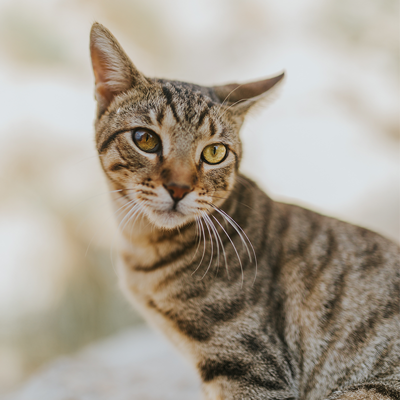

Adopt
Ask about pets that may be a good match for your home and daily life.
Explore adoptionHope for local pets
Every animal deserves safety, care, and a loving home. You can help make that possible.
Volunteer or Foster
Why we are here
Twin Cities Animal Rescue helps animals in need and connects them with caring people. We work with neighbors to support adoption, foster homes, and volunteer service.
Whether you open your home or offer your time, you can be part of a stronger community for animals.
120
Animals supported
35
Volunteers involved
25
Foster families connected
Class project note: These numbers are examples and are not verified rescue statistics.
There is a place for you
Ask about pets that may be a good match for your home and daily life.
Explore adoptionGive an animal a safe place to stay while a long-term home is found.
Learn about fosteringSupport animals through basic care, community events, or supply help.
Share your interestPet spotlight
A safe place to rest and people who care can change an animal's future. Every pet deserves a chance to feel at home.
See How Adoption Works